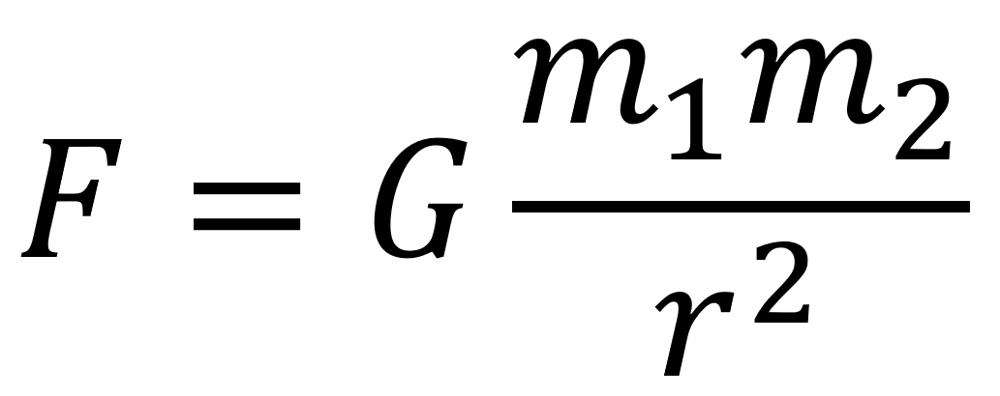
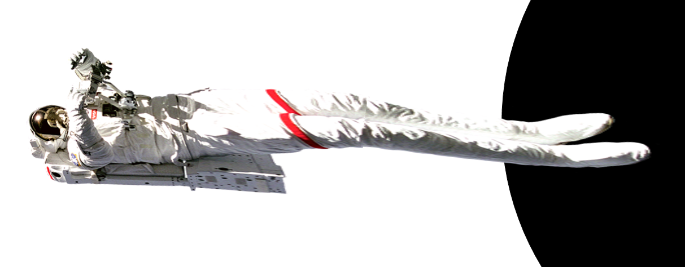

The strength of gravity depends on yours distance from the body. This means your feet experience more gravitational force frorm earth than your head when you stand. Near a black hole, where gravitational forces are extreme, the resultant forces on different parts of an object causes it to stretch out and become like spaghetti.

The equation for the force of gravity of an object is dictated by the equation to the right, where the two m's are the masses of the two bodies, G is the gravitational constant, and r is the distance between the two objects.
Say you are falling into a black hole. When you're nearing the event horizon, the gravity on your feet is much larger than the gravity on your head. As you get closer to the black hole, the difference in strength of gravity only becomes greater. Eventually, this causes your body to stretch towards the black hole.

This effect can become so extreme that near a big black hole that your whole body would stretch out like spaghetti.